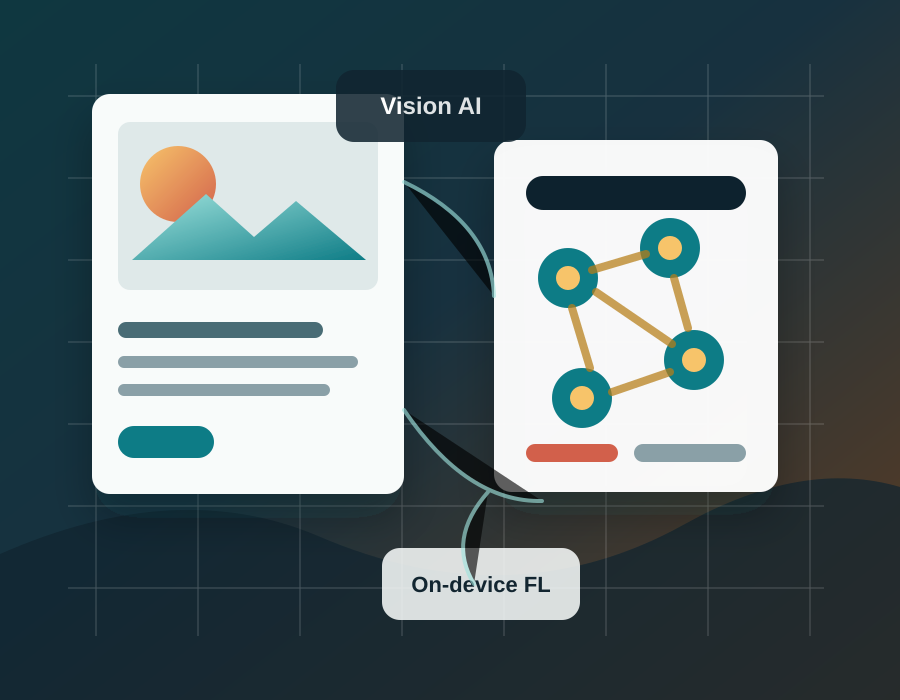

May 2025 - Present
Lead Engineer, Samsung Research Institute Bangalore
Working with the Platform Intelligence team on Samsung S26 on-device personalization, federated learning systems, and efficient PEFT-based multi-task optimization.
Lead Engineer · Generative AI · Computer Vision
I work at Samsung Research Institute Bangalore on federated learning, on-device personalization, and efficient multimodal intelligence. My Ph.D. research at IIT Madras focused on text-to-image synthesis, representation learning, and segmentation.

Experience
Working with the Platform Intelligence team on Samsung S26 on-device personalization, federated learning systems, and efficient PEFT-based multi-task optimization.
Built agentic AI and computer vision pipelines for enterprise analytics, real-time safety monitoring, compliance tracking, and scalable client deployments.
Researched text-to-video distillation for diffusion models using Latent Consistency Models, PEFT, and LLM-guided caption refinement.
Research
My research spans text-to-image synthesis, dual-text embeddings, foreground-background segmentation, diffusion acceleration, and vision-language systems.
Open Google ScholarSelected Projects
Co-generation of images and segmentation masks using spatial co-attention for unsupervised synthesis and segmentation.
Multi-level text conditioning for semantically stronger text-to-image generation.
Domain adaptation for on-device image personalization under client heterogeneity.
LoRA-based classification model for action prediction in mobile personalization workflows.
Web Resume
Lead Engineer specializing in Generative AI, computer vision, federated learning, and scalable AI systems.
Lead Engineer at Samsung Research Institute Bangalore working on multimodal generation, federated learning, and on-device personalization. Ph.D. from IIT Madras with research in text-to-image synthesis and representation learning.
On-device personalization, FL stabilization, one-shot FL, LoRA-based action prediction, and PEFT-based multi-task optimization.
Agentic AI systems and computer vision pipelines for enterprise analytics, safety monitoring, and compliance.
Text-to-video diffusion distillation with LCM, PEFT, and LLM-guided caption refinement.
Thesis: Text-to-Image Synthesis with Novel Representations and Corollaries. CGPA: 8.5/10.
CGPA: 9.42/10.
CGPA: 8.5/10.
Reviewer for CVPR and ECCV. Teaching Assistant at IIT Madras for Deep Learning, Pattern Recognition and Machine Learning, Operating Systems, and Computer Architecture. Mentored 20+ undergraduate projects in computer vision, GAN-based synthesis, and deep learning systems.
Contact